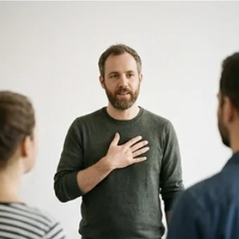

deutschoderwas · Sprechclub · Montag, 7. September · Einzelstunde
Nein sagen, ohne unhöflich zu sein
Jemand bittet dich um etwas, und noch bevor du nachgedacht hast, sagt dein Mund „ja“. Heute lernst du den Satz, der dazwischenpasst.
Dein Niveau
Gleiches Thema, andere Sätze. B1 sagt es direkt, B2 sagt es zwischen den Zeilen. Probier ruhig beides.
„Hättest du kurz Zeit für mich?“
Schaut euch das Bild an. Die beiden reden über etwas Unangenehmes. Was, glaubt ihr, hat die eine gerade gefragt?
Wann hast du zuletzt „ja“ gesagt, obwohl du „nein“ gemeint hast?
Zu wem kannst du leicht „nein“ sagen — und zu wem fast nie?
Was passiert, wenn du nie „nein“ sagst?
Gibt es Menschen, bei denen dir ein „nein“ leichtfällt? Was ist bei denen anders?
Sagt man in deinem Land direkt „nein“ — oder gibt es andere Wege, es klarzumachen?
Was hat dich ein zu schnelles „ja“ schon einmal gekostet?
🗣️ Sprecht reihum: „Neulich habe ich zugesagt, obwohl …“ · „Am schwersten fällt es mir bei …“ · „Danach habe ich mich geärgert, weil …“
Nein ist kein Angriff
Ein Nein lehnt die Bitte ab — nicht den Menschen. Wer das trennt, kann freundlich bleiben und trotzdem bei sich bleiben.
Wie fühlt es sich an, wenn dir jemand freundlich absagt?
Was ist schlimmer: ein klares Nein oder ein Ja, das nie eingelöst wird?
Brauchst du für ein Nein immer einen Grund?
👀 Zu zweit, eine Minute: Einer bittet immer weiter um denselben Gefallen, der andere sagt jedes Mal anders nein — freundlich, aber ohne einzuknicken. Dann tauschen.
Zwölf Wörter für ein gutes Nein
Sagt jedes Wort laut — und gleich den Beispielsatz hinterher. Erst dann bleibt es hängen.
🙏
die Bitte
„Ich verstehe deine Bitte, aber diese Woche schaffe ich das nicht.“
💡 Die Bitte ist das, worum jemand dich bittet. Nicht verwechseln mit „bitte“ als Höflichkeitswort.
🤝
der Gefallen
„Kannst du mir einen Gefallen tun? — Kommt darauf an, welchen.“
💡 Man tut jemandem einen Gefallen. Und man darf ihn auch ausschlagen.
absagen
„Ich muss für Samstag leider absagen.“
💡 Gegenteil: zusagen. Man sagt für einen Termin ab oder jemandem ab.
ablehnen
„Sie hat das Angebot höflich abgelehnt.“
💡 Etwas ablehnen ist stärker und sachlicher als absagen — passt zu Angebot, Vorschlag, Antrag.
🚧
die Grenze
„Er zieht klare Grenzen und bleibt trotzdem freundlich.“
💡 Grenzen ziehen oder setzen heißt: sagen, wo bei dir Schluss ist.

ehrlich
„Ganz ehrlich: Ich habe einfach keine Lust.“
💡 „Ganz ehrlich …“ leitet eine offene Antwort ein — und macht sie weicher, nicht härter.
🙈
die Ausrede
„Er sucht jedes Mal eine neue Ausrede, statt einmal Nein zu sagen.“
💡 Eine Ausrede ist ein erfundener Grund. Sie hilft kurz — und schadet lang.
die Überstunde
„Diese Woche mache ich keine Überstunden mehr.“
💡 Fast immer im Plural: Überstunden machen, Überstunden abbauen.
leihen
„Ich leihe grundsätzlich kein Geld — auch nicht an Freunde.“
💡 Achtung: leihen = geben, sich leihen = nehmen. „Ich leihe dir zwanzig Euro.“
die Einladung
„Danke für die Einladung — ich schaffe es diesmal leider nicht.“
💡 Bei einer Absage kommt der Dank vor das Nein. Immer.
der Vorschlag
„Mein Vorschlag: nicht heute, aber nächste Woche.“
💡 Der Gegenvorschlag ist die halbe Miete: Er macht aus einem Nein ein Später.
😬
der Druck
„Sie hat nachgefragt, bis ich nachgegeben habe — das war schon Druck.“
💡 unter Druck stehen, jemandem Druck machen. Wer Druck macht, hat kein Recht auf dein Ja.
💡 Spiel: Verdeckt die Wörter und deckt sie einzeln auf. Wer eine Karte trifft, baut damit einen Satz, der mit „Leider …“ anfängt.
Zwischen Ja und Nein liegen drei Stufen
Die meisten kennen nur zwei Knöpfe: ganz Ja oder gar nichts. Dazwischen liegen die Sätze, die im Alltag wirklich helfen — und darunter drei Paare: links, was ankommt, rechts, was nicht ankommt.
🕐
Das weiche Nein
Du sagst nicht ab — du verschiebst.
Heute schaffe ich es nicht. Frag mich Donnerstag noch mal.
🔁
Das halbe Nein
Du machst einen Teil, nicht alles.
Den Text lese ich gern. Die Tabelle schaffe ich nicht mehr.
🛑
Das klare Nein
Kein Grund, keine Diskussion.
Nein, das mache ich nicht. Tut mir leid.
✅ Freundlich und klar
Danke, dass du an mich denkst — diesmal passt es bei mir nicht.
Warum das wirktErst Dank, dann Absage. Der Mensch wird gewürdigt, die Bitte abgelehnt.
❌ Zu weich
Ähm, ich weiß nicht … vielleicht … mal schauen.
Das ProblemDas ist kein Nein, sondern eine Verlängerung. Der andere fragt garantiert noch mal.
✅ Ohne Ausrede
Ich möchte den Abend lieber für mich haben.
Warum das wirktEin ehrlicher Wunsch ist ein vollwertiger Grund. Man muss nichts erfinden.
❌ Erfundener Grund
Ich kann nicht, meine Cousine kommt zu Besuch.
Das ProblemAusreden muss man sich merken. Und beim nächsten Mal braucht man eine neue.
✅ Kurz halten
Nein, das geht bei mir nicht. Aber danke fürs Fragen!
Warum das wirktJe kürzer die Begründung, desto weniger Angriffsfläche. Lange Erklärungen klingen unsicher.
❌ Zu viel erklärt
Also, das ist so, ich habe im Moment ziemlich viel, und dann kommt noch dazu, dass …
Das ProblemWer lange erklärt, lädt zum Verhandeln ein. Jeder Grund kann entkräftet werden.
Dann hilft eine alte Technik: Wiederhole denselben Satz, ruhig und ohne neuen Grund.
1. „Ich verstehe das — trotzdem geht es bei mir nicht.“
2. „Ich verstehe das gut. Und trotzdem: Es geht nicht.“
3. „Ich merke, du brauchst das dringend. Meine Antwort bleibt aber gleich.“
Kein neues Argument nachschieben. Jedes neue Argument ist eine neue Tür, durch die verhandelt wird.
⚖️ Kurzübung: Eine Bitte, drei Antworten — sagt sie nacheinander laut: einmal weich, einmal halb, einmal klar. Hört ihr den Unterschied?
Die vier Bausteine, die immer passen
In dieser Reihenfolge: danken, absagen, kurz begründen, etwas anbieten. Wer sie kennt, muss nie wieder improvisieren.
1 · 🙏 Erst danken Danke, dass du fragst.Schön, dass du an mich denkst.Das freut mich, dass du mich fragst.
So klingt esDanke, dass du fragst — das freut mich wirklich.
2 · 🛑 Dann absagen Leider geht das nicht.Da muss ich passen.Ich schaffe das nicht.
So klingt esLeiderschaffe ich das diese Woche nicht.
3 · 💬 Kurz begründen Ich habe schon zu viel auf dem Tisch.Ich brauche den Abend für mich.Das ist mir zu viel.
So klingt esIch habediese Woche schon zu viel zugesagt.
4 · 🤝 Etwas anbieten Nächste Woche gern.Frag mich noch mal, wenn …Ich kenne jemanden, der …
So klingt esNächste Wochehelfe ich dir gern.
1 · 🙏 Erst würdigen Ich fühle mich geehrt, dass du an mich denkst.Das ehrt mich.Ich weiß, dass du dich darauf verlassen hast.
So klingt esIch weiß, dass du dich darauf verlassen hast — umso schwerer fällt mir die Antwort.
2 · 🛑 Klar absagen Ich werde das nicht übernehmen.Da muss ich dich enttäuschen.Das kommt für mich nicht infrage.
So klingt esDa muss ich dich leider enttäuschen: Diese Aufgabe übernehme ich nicht.
3 · 💬 Haltung zeigen Ich habe mir vorgenommen, …Aus Prinzip mache ich das nicht.Ich möchte mich nicht verzetteln.
So klingt esIch habe mir festvorgenommen, abends nicht mehr zu arbeiten.
4 · 🤝 Die Tür offen lassen Was ich dir anbieten kann, ist …Melde dich gern wieder, sobald …An meiner Stelle könnte dir X weiterhelfen.
So klingt esWas ich dir anbieten kann, ist eine halbe Stundeam Freitag.
Verb worum es geht Zeit und Menge Höflichkeit
🗣️ Sofort anwenden: Baut euer eigenes Nein aus allen vier Bausteinen — danken, absagen, begründen, anbieten — und sagt es einmal laut am Stück. Vier Sätze, mehr nicht.
Vier Absagen — zwei Runden
Runde 1: Lest den Dialog zu zweit laut. Runde 2: Auf den Knopf tippen — B verschwindet, und ihr antwortet selbst. Die Regieanweisung bleibt als Hilfe stehen.
Dialog 1 · „Noch schnell die Präsentation“
Freitag, 16:30 Uhr. Deine Kollegin steht mit dem Laptop neben deinem Schreibtisch.
A
Du, hättest du heute noch eine Stunde? Die Folien für Montag sind noch nicht fertig.
B
Danke, dass du mich fragst — aber heute schaffe ich das nicht mehr.
🗣️ Erst danken, dann absagen. Ein Satz für beides.tippen = Hilfe zeigen
A
Es wäre wirklich nur eine Stunde. Sonst steh ich Montag ganz blöd da.
B
Das verstehe ich. Trotzdem bleibt es dabei: Heute geht bei mir nichts mehr.
🗣️ Verständnis zeigen — und denselben Satz wiederholen. Keinen neuen Grund nennen.tippen = Hilfe zeigen
A
Hm. Und Montag früh?
B
Montag um acht bin ich da, dann gehen wir sie zusammen durch.
🗣️ Biete etwas Konkretes an: eine Zeit und was du dann tust.tippen = Hilfe zeigen
A
Okay, das rettet mich. Danke dir!
Dialog 2 · „Samstag, schon wieder“
Deine Freundin plant den dritten Samstag hintereinander etwas — und du willst einfach mal nichts.
A
Samstag grillen wir bei Timo. Du kommst doch mit, oder?
B
Schön, dass ihr an mich denkt. Diesmal bleibe ich aber zu Hause.
🗣️ Danke plus Absage. Sag „diesmal“ — das macht klar, dass es nicht grundsätzlich ist.tippen = Hilfe zeigen
A
Ach komm, du warst letztes Mal auch schon nicht da.
B
Stimmt. Ich merke einfach, dass ich ein Wochenende für mich brauche.
🗣️ Der eigene Wunsch reicht als Grund. Keine Ausrede erfinden.tippen = Hilfe zeigen
A
Alles okay bei dir?
B
Ja, alles gut — ich bin nur voll. Sag mir Bescheid, wenn ihr das nächste Mal was macht.
🗣️ Beruhige kurz und lass die Tür offen.tippen = Hilfe zeigen
A
Mach ich. Dann erhol dich gut!
Dialog 3 · „Kannst du mir was leihen?“
Dein Nachbar klingelt. Er hat schon zweimal Geld geliehen und einmal nicht zurückgezahlt.
A
Sag mal, könntest du mir bis Ende des Monats zweihundert Euro leihen?
B
Das ist mir unangenehm, aber ich leihe grundsätzlich kein Geld.
🗣️ Nenn deine Regel, nicht seine Person. „Grundsätzlich“ nimmt der Absage das Persönliche.tippen = Hilfe zeigen
A
Aber es geht doch nur um zwei Wochen.
B
Ich weiß. Und ich mache da trotzdem keine Ausnahme — bei niemandem.
🗣️ Die Regel gilt für alle. Das ist die freundlichste Form von Konsequenz.tippen = Hilfe zeigen
A
Na gut. Verstehe ich.
B
Wenn es hilft: Bei der Stadt gibt es eine kostenlose Schuldnerberatung. Die Nummer suche ich dir raus.
🗣️ Biete etwas an, das dich nichts kostet, ihm aber weiterhilft.tippen = Hilfe zeigen
A
Das wäre nett. Danke.
Dialog 4 · „Ein Anruf, den du nicht wolltest“
Unbekannte Nummer. Jemand will dir am Telefon einen neuen Stromvertrag verkaufen.
A
Guten Tag, Kern von der Energieberatung. Wir haben ein Angebot, mit dem Sie jeden Monat sparen.
B
Danke, ich habe daran kein Interesse.
🗣️ Kurz und sachlich. Kein Grund nötig, kein Gespräch anfangen.tippen = Hilfe zeigen
A
Darf ich Ihnen trotzdem in zwei Minuten erklären, worum es geht?
B
Nein. Ich schließe am Telefon grundsätzlich keine Verträge ab.
🗣️ Ein klares Nein zuerst, dann deine Regel.tippen = Hilfe zeigen
A
Aber Sie zahlen dann weiter zu viel.
B
Das ist meine Entscheidung. Bitte nehmen Sie meine Nummer aus Ihrer Liste. Auf Wiederhören.
🗣️ Entscheidung benennen, konkrete Bitte, verabschieden — und auflegen.tippen = Hilfe zeigen
🎭 Und jetzt ihr: Spielt Dialog 1 noch einmal — aber A gibt nicht so schnell nach. B darf nur einen Grund nennen und muss ihn wiederholen. Wie lange haltet ihr das durch?
🧩 Konjunktiv II als Weichmacher
würde, könnte, hätte, wäre — dieselbe Aussage, nur mit Watte drumherum. Genau das braucht ein Nein.
Der Konjunktiv II macht aus einer Feststellung ein Angebot. „Das geht nicht“ ist eine Wand. „Das wäre schwierig“ ist eine Tür, die nur gerade zu ist. Im gesprochenen Deutsch reicht dafür fast immer würde + Infinitiv — außer bei sein, haben und den Modalverben, die eigene kurze Formen haben.
🧱HartDas mache ich nicht.
▾
🪟WeicherDas würde ich lieber nicht machen.
▾
🕊️Noch weicherDas wäre mir ehrlich gesagt zu viel.
▾
🤝Mit AuswegKönnten wir das nächste Woche noch mal ansehen?
Position 1Das
Verb (Position 2)wäre
Mittelfeldmir ehrlich gesagt
Endezu viel.
Die kurzen Formen — auswendig, dann nie wieder
Diese sechs benutzt du täglich. Alles andere baust du mit würde.
🙂
hätte
für Wünsche und Bitten
Ich hätte da eine Bitte.
🤔
könnte
für Möglichkeiten
Ich könnte höchstens den Anfang übernehmen.
😌
wäre
für Bewertungen
Das wäre mir zu knapp.
ich wäreich hätteich könnteich müssteich sollteich würde
Die Falle: würde und wäre nicht mischen
Bei sein, haben und den Modalverben nimmt man die kurze Form — nicht würde.
✅ Richtig
Das wäre mir zu viel.
Warumsein hat eine eigene Form: wäre. Kurz und schön.
❌ Falsch
Das würde sein mir zu viel.
Merkenwürde + sein sagt niemand. Bei sein immer wäre.
✅ Richtig
Ich könnte dir Freitag helfen.
WarumModalverben haben eigene Konjunktivformen: könnte, müsste, sollte, dürfte.
❌ Falsch
Ich würde können dir Freitag helfen.
MerkenDoppelt gemoppelt — und im Deutschen falsch.
✅ Richtig
Ich würde das lieber nicht machen.
WarumBei allen normalen Verben: würde + Infinitiv ganz ans Ende.
❌ Falsch
Ich machte das lieber nicht.
MerkenGrammatisch möglich, klingt aber gestelzt. Gesprochen nimmt man würde.
🧱 Bau die Sätze selbst
Tippe die Teile in der richtigen Reihenfolge an. Danach auf „prüfen“.
📖 Und jetzt im Zusammenhang
Eine Absage per Nachricht. Wähle in jeder Lücke das passende Wort.
Eine einzige Frage entscheidet:
Ist das Verb sein oder haben? → wäre / hätte
Ist es ein Modalverb (können, müssen, sollen, dürfen)? → könnte / müsste / sollte / dürfte
Alles andere? → würde + Infinitiv ans Satzende
Und wenn du im Gespräch unsicher bist: Nimm würde. Es klingt nie falsch, nur manchmal etwas umständlich.
🎭 Drei Absagen
Zu zweit. A bittet und gibt nicht sofort auf, B sagt ab und bleibt freundlich. Nach zwei Minuten tauschen.
1 · Die zusätzliche Aufgabe
A ist Teamleitung und möchte, dass B ein Projekt übernimmt. B hat schon zwei laufen.
Danke, dass Sie an mich denkenDas schaffe ich nichtIch habe schon zwei ProjekteWas ich anbieten kann, ist …
Ich fühle mich geehrt, aber …Ich möchte mich nicht verzettelnWenn ich das übernehme, leidet …Mein Gegenvorschlag wäre …
✅ Eine gute Runde enthältEin Dank, ein klares Nein, genau ein Grund — und ein konkreter Gegenvorschlag mit Zeit und Umfang.
2 · Die Hochzeit am anderen Ende des Landes
A lädt zur Hochzeit ein, sechs Stunden Fahrt. B will nicht hinfahren, mag A aber sehr.
Danke für die EinladungIch schaffe es leider nichtDie Fahrt ist mir zu weitIch denke an euch
Ich freue mich riesig für euchSo gern ich käme —Ich möchte ehrlich sein:Lasst uns danach etwas ausmachen
✅ Eine gute Runde enthältFreude über die Nachricht, eine klare Absage ohne erfundenen Grund — und ein echtes Angebot für ein Treffen danach.
3 · Der Nachbar mit dem Paket
A nimmt seit Wochen Pakete bei B an — und B soll sie jetzt auch noch weiterbringen.
Pakete annehmen mache ich gernAber wegbringen schaffe ich nichtDas ist mir zu vielBis zur Tür, mehr nicht
Ich mache das gern in dem Rahmen, in dem …Da ziehe ich eine GrenzeIch möchte das nicht zur Regel machenIch schlage vor, dass wir …
✅ Eine gute Runde enthältB sagt, was weiterhin geht, und was nicht mehr — die Grenze wird benannt, nicht nur angedeutet.
🎴 Sprechkarten
Zieh eine Karte und sprich mindestens vier Sätze am Stück.
Deine Aufgabe
Tippe auf den Knopf.
⏱️ Die 90-Sekunden-Challenge
Eine Situation, anderthalb Minuten. Erzähle: Worum wird gebeten? Wie sagst du ab? Was bietest du an?
Dein Wort
eine Einladung absagen
1:30
Geh die vier Bausteine der Reihe nach durch, dann füllt sich die Zeit von allein:
1. Wer fragt dich, und worum genau?
2. Dein Dank in einem Satz.
3. Deine Absage — und ein einziger Grund.
4. Was du stattdessen anbietest.
Und wenn ein Wort fehlt: beschreib es. „So ein Papier, das man unterschreibt“ ist besser als eine Pause.
⏱️ Spielregel: Wer stehen bleibt, sagt einfach „Moment, ich überlege“ — auf Deutsch. Das ist erlaubt und klingt im echten Gespräch völlig normal.
✅ Sitzt es schon?
8 Fragen. Tippe auf deine Antwort — die Erklärung kommt sofort.
✍️ Lückentext
Wähle in jeder Lücke das passende Wort.
📣 Danach laut: Lest die vier Bausteine noch einmal am Stück vor — danken, absagen, begründen, anbieten. Erst wenn es flüssig klingt, sitzt es.
📮 Deine Hausaufgabe bis Mittwoch
Vier kleine Aufgaben, zusammen etwa 25 Minuten. Tippe eine an, wenn du sie geschafft hast.
💡 Warum das hilft: Ein Nein braucht man selten — aber immer plötzlich. Wer die Sätze einmal laut gesagt hat, findet sie im Ernstfall wieder.
0 von 0 Aufgaben geschafft.
So könnten deine drei Absagen klingen:
An die Freundin: „Danke fürs Fragen! Diesmal bleibe ich zu Hause.“
An die Kollegin: „Das schaffe ich heute nicht mehr. Montag früh gern.“
An einen Fremden: „Nein danke, ich habe kein Interesse.“
Zwei Sätze reichen immer. Der erste ist freundlich, der zweite ist klar.
Dieselbe Absage in drei Registern:
Freundin: „Ach, so gern ich käme — ich brauche das Wochenende diesmal für mich.“
Chefin: „Ich möchte offen sein: Wenn ich das übernehme, leidet das Projekt Nord. Was ich anbieten kann, ist …“
Behörde: „Von dem Angebot möchte ich keinen Gebrauch machen. Bitte streichen Sie mich aus dem Verteiler.“
Der Kern bleibt gleich: Dank, Absage, ein Grund, ein Angebot. Nur die Wortwahl wandert nach oben.
📬 Abgabe: Schick deine Sprachnachricht bis Mittwoch 18 Uhr in die Gruppe. Wir hören zwei davon gemeinsam an — freiwillig, versteht sich.
🔜 Nächstes Mal: Am Mittwoch geht es ums Gegenteil — sich beschweren und dabei gewinnen. Wer heute Nein sagen kann, hat es dort schon leichter.